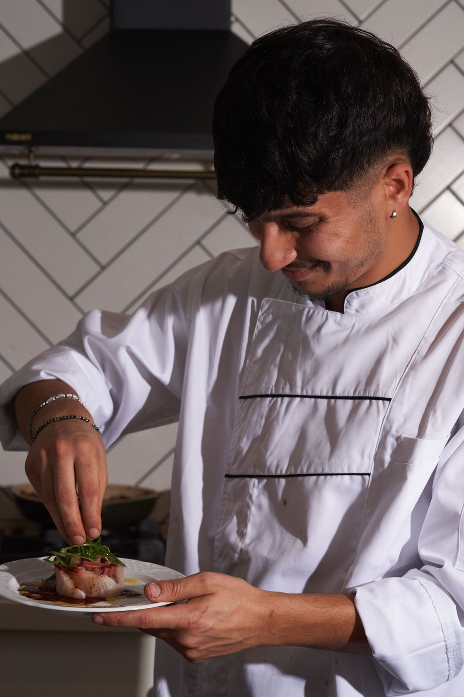
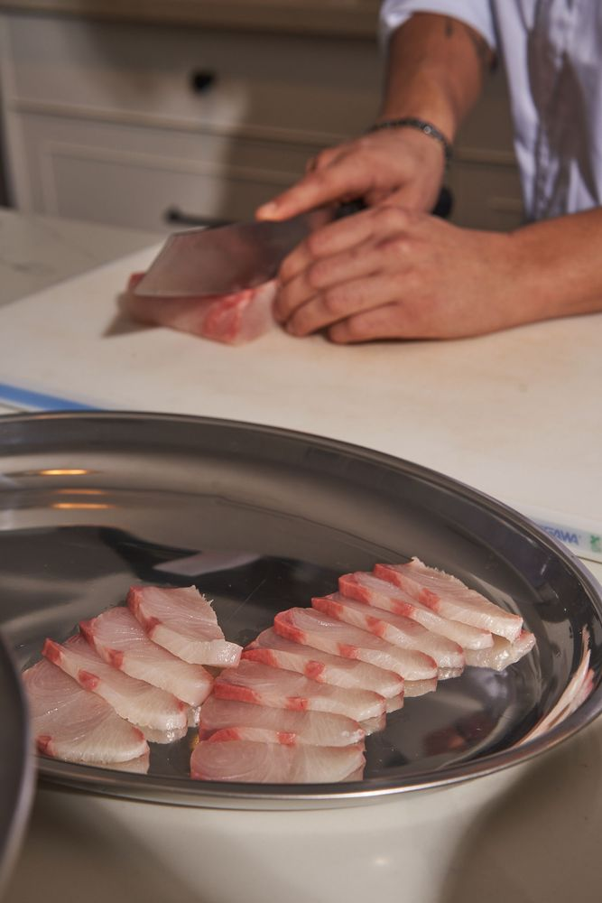
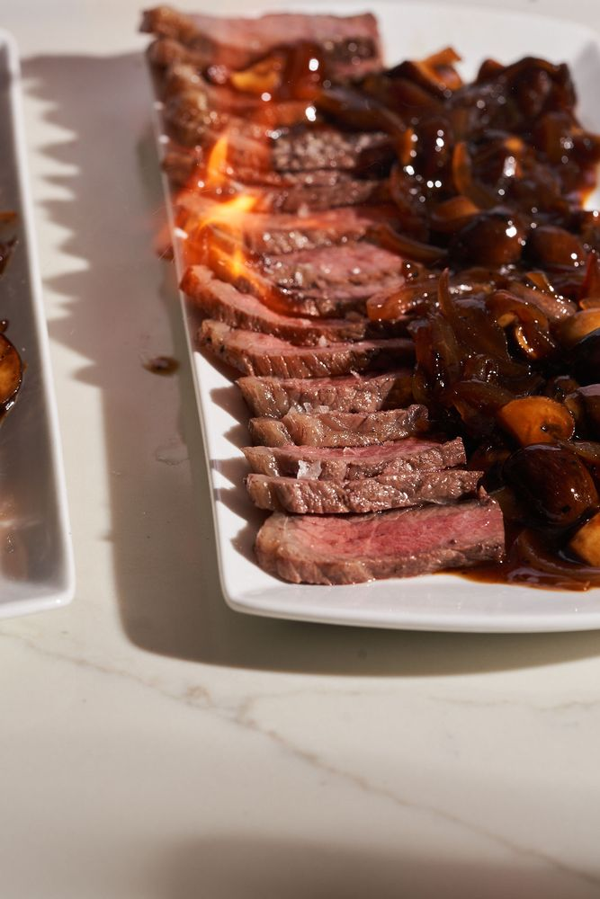

שף פרטי או קייטרינג? איך בוחרים לאירוע בבית

כשמתכננים אירוע בבית, השאלה הראשונה היא בדרך כלל מי יאכיל את כולם. שתי התשובות הנפוצות הן קייטרינג ושף פרטי - והן שונות יותר ממה שנדמה.
קייטרינג מכין את האוכל מראש במטבח שלו ומביא אותו מוכן. שף פרטי מבשל אצלכם במקום, והמנות יוצאות לשולחן טריות. קייטרינג מתאים יותר לאירוע גדול בסגנון מזנון או למקום בלי מטבח. שף פרטי מתאים כשהאורחים יושבים סביב שולחן והארוחה היא מרכז הערב.
מה ההבדל בין שף פרטי לקייטרינג?
קייטרינג מכין את האוכל מראש, במטבח שלו, ומביא אותו מוכן או כמעט מוכן. שף פרטי מבשל אצלכם, במקום, והמנות יוצאות לשולחן ברגע שהן מוכנות. מההבדל הזה נגזר כמעט כל השאר.
| שף פרטי | קייטרינג | |
|---|---|---|
| איפה מבשלים | אצלכם, במקום | במטבח של הקייטרינג, מראש |
| מתי המנה מוכנה | רגע לפני שהיא יוצאת לשולחן | לפני האירוע, ומחוממת או מוגשת במקום |
| התפריט | נכתב מהתחלה סביב האורחים שלכם | לרוב נבחר מתוך תפריטים קבועים |
| צריך מטבח במקום | כן | לא תמיד |
| מתאים במיוחד ל | ארוחה סביב שולחן, כשהאוכל הוא מרכז הערב | הרבה מאוד אורחים, מזנון, או מקום בלי מטבח |
למה זה משנה את הטריות של האוכל?

יש מאכלים שלא אוהבים לחכות: דג נא שנפרס רגע לפני ההגשה, סטייק שצריך לנוח דקות ספורות ולא שעה, לחם שיוצא חם מהתנור, רוטב שמתחבר לצלחת ברגע האחרון. בבישול במקום, המנות האלה מגיעות לשולחן כמו שהן אמורות להיות.
כמה אפשר להתאים את התפריט?
קייטרינג עובד לרוב עם תפריטים קבועים שאפשר לבחור מתוכם. אצל שף פרטי התפריט נכתב מהתחלה סביב האורחים שלכם - מה הם אוהבים, מה הם לא אוכלים, ומה אתם רוצים שיזכרו מהערב.
מה ההבדל בחוויה של האורחים?

שף פרטי הוא חלק מהערב. האורחים רואים את ההכנות, שומעים על המנה שמונחת מולם ומרגישים שמשהו קורה בשבילם. זה הבדל שקשה למדוד, אבל קל מאוד להרגיש.
אז מה מתאים לכם?
קייטרינג מתאים יותר כש־
- מדובר בהרבה מאוד אורחים, או באירוע בסגנון מזנון.
- אין במקום מטבח שאפשר לעבוד בו.
- האוכל הוא תוספת לאירוע, לא הלב שלו.
שף פרטי מתאים יותר כש־
- האורחים יושבים סביב שולחן, והארוחה היא מרכז הערב. גם באירוע של עשרות אורחים (מדריך לאירוע בבית ל-15 עד 30 איש).
- חשוב לכם תפריט אישי, עם מנות שמוגשות טריות.
- אתם רוצים ליהנות מהאירוע שלכם, ולא לנהל אותו.
מה לשאול לפני שמזמינים?
- מה בדיוק כלול במחיר - חומרי גלם, הגשה, כלים, צוות? (ממה מורכב המחיר של שף פרטי)
- אפשר לראות תמונות אמיתיות מאירועים קודמים?
- איך מטפלים באלרגיות ובהעדפות תזונתיות?
- כמה זמן לפני האורחים מגיעים, ומה צריך להכין מראש?
שאלות נפוצות
אפשר להזמין שף פרטי לאירוע גדול?
כן. ליאב עושה ארוחות פרטיות וגם אירועים, מארוחה זוגית ועד 200 איש. מה שקובע הוא שיהיה מטבח לעבוד בו ושהאורחים ישבו לארוחה, ואת הפרטים בודקים יחד בשיחה הראשונה.
מה יותר זול, שף פרטי או קייטרינג?
אין תשובה אחת. המחיר תלוי במספר האורחים, בתפריט ובמה שכלול בו. כדאי לבקש הצעה מפורטת משני הצדדים ולבדוק מה כלול: חומרי גלם, הגשה, כלים וצוות.
רוצים ערב כזה אצלכם?
שלחו הודעה בוואטסאפ עם תאריך משוער ומספר אורחים, ונתחיל לבנות את התפריט.
להזמנת ערב